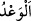

ulaştıracağını haber vermek; şer ile birlikte kullanıldığında ise bir zararı önceden bir
kişiye ulaştıracağını haber vermek mânâsına gelir. Ancak hayır ve şer kelimeleri
kullanılmadığı zaman hayır vaadetme mânâsına “ __WORD__ ” ve “__WORD__” kelimeleri kullanılır.
Şer/kötülük vaadetme mânâsına “__WORD__” ve “__WORD__” kelimeleri kullanılır.
“Cehennem”, nâr’ın (âhirette suçluların yanacağı ateşin) isimlerindendir. Dibi derin
olan kuyuya Araplar “cihinnâm” derler. Dibi derin olduğu için “cehennem” kelimesinin
de bu lafızdan alınmış olması muhtemeldir.
Rivayete göre Rasûlullah (s.a.), kendisini korku ve dehşete düşüren bir ses işitti.
Cibrîl (a.s.) yanına geldi. Peygamber Efendimiz (a.s.) ona: “Bu ses de nedir, ey
Cebrâîl?” dedi. Cebrâîl: “O, cehennemin üst kenarından yetmiş yıl önce atılan bir
kayanın sesidir. İşte cehennemin dibine şimdi ulaştı. Allah onun sesini sana işittirmek
istedi.” demiştir. Ondan sonra Rasûlullah (s.a.), Allah ruhunu kabzedinceye kadar ağız
dolusu (ağzının içi görülecek şekilde) gülerken görülmemiştir.[196]
“O,” Azap ve ceza olarak cehennem ateşi “onlara yeter.” Bu azaptan daha şiddetlisi
yoktur, bundan fazla bir azab da mümkün değildir.
“Allah onları lânetlemiştir.” Onları rahmetinden uzaklaştırmış, zelil ve hakir
kılmıştır. Âyetin bu kısmı, ateşte ebedî olarak kalmanın ihtiva ettiği bazı hususları
açıklamaktadır. İçerisinde ebedî kalınacak olan ateş, cehennemliklere acı ve sıkıntı
verme konusunda yeterli olmakla birlikte onları lânetleme, zelil ve hakir kılma gibi
daha başka birçok çetinlikleri de içermektedir.
“Onlar için sürekli bir azap vardır”. Onlar için hiç kesilmeyen bir azap vardır.
Burada sözü edilen azap, âyette daha önce kendilerine vaadedilen cehennem ateşinde
sürekli kalma azabıdır. Bu ifâde daha önce yukarıda onların cehennem azâbında sürekli
olarak kalacakları şeklindeki ifâdeyi te’kid etmektedir.
69. Siz de tıpkı kendinizden öncekiler gibisiniz. Oysa onlar kuvvetçe sizden daha
yaman, mal ve evlatça sizden daha çok idiler. Onlar (dünya malından) kendi
paylarına düşenden faydalandılar. Sizden öncekilerin kendi paylarına düşenden
faydalandıkları gibi siz de kendi payınıza düşenden faydalandınız ve (bâtıla)
dalanlar gibi siz de (bâtıla) daldınız. Onlar, yaptıkları işler, dünya ve âhirette boşa
gitmiş kimselerdir ve ziyana uğrayanlar da onlardır.